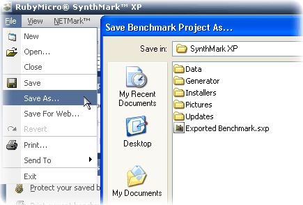

|
Loading and Saving
Projects with SynthMark XP. See Also: Saving for the Web, The Revert Feature, The
Content Manager, Back to Main. The main part of managing your benchmarks is saving and
loading them for later additions or reviews. SynthMark XP features our new
highly compressed format with password support for those of you with
paranoia. The compression levels are adjustable in the options window, but
generally the files are so small that you may as well just leave it on its
default setting. It’s not unless you have much higher content manager
settings does the compression really set becoming effective. Other than that
fitting 1000 words and a few benchmarks scores and graphs will result in a estimated file size of about 1.5 kilobytes which is
0.00015 megabytes. So your can save about 6000 saved benchmark files just to
use a megabyte. Besides the technical reasons the feature is great use for
saving projects while you are online, there may be some chat you want save
and laugh about later or some very interesting benchmarking results you would
like to keep, that little save button is at your disposal. How to save a project: 1.
Once you have created a new benchmarking session, started or
joined a NETMark server the save button will be available. 2.
At any time you can click the file drop down menu, followed by
the save button. 3.
If this is the first time you are saving a benchmark in this
session, a save project dialogue box will open. 4.
The box will allow you to browse your computer and find a
place you want to save the file to. 5.
If you have already saved the file before, the save button
will just update your current save file. There is also a save icon on the tool bar for your
convenience, this icon links only to the Save option and not to the Save As
option. This means that the above number 4 applies in all cases. How does the Save As option work: ·
The save as option ignores the previous file name ·
Whenever clicked, a new save to dialogue box will open
allowing you to give the project a new name.  How to Load a previously Saved Project: 1.
Click the file drop down menu, followed by the
‘Open…’ option. 2.
A load project dialogue box will open allowing you to browse
your computer and select which project you want to open. 3.
This dialogue box supports only the .sxp files which have been
saved by either the Save or Save as option in SynthMark XP. 4.
Once you have found the project your want to open, either
double click the file or click it once and click the
open button. Notes on Loading Projects: If you have just upgraded your SynthMark XP version or copied
a project from a friend, the file format may be older than the one you are
running, in this case SynthMark XP will still work and load the project, but
the file will be upgraded the next time you save it. And if the system with
the older SynthMark XP version tries to open it, some features may be missing
or not available to them. |